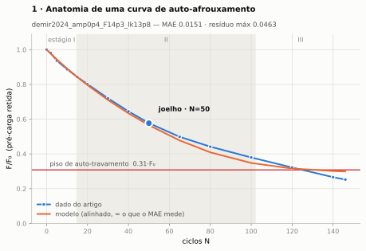
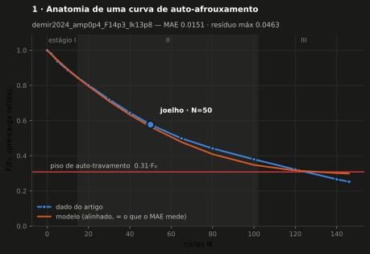
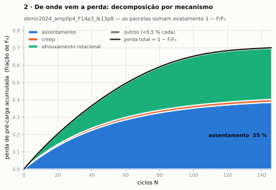
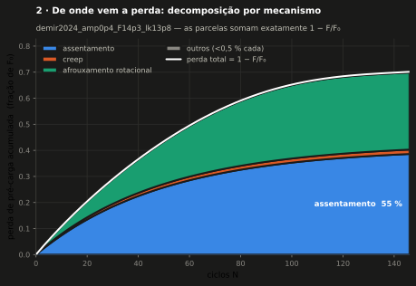
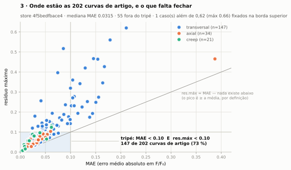
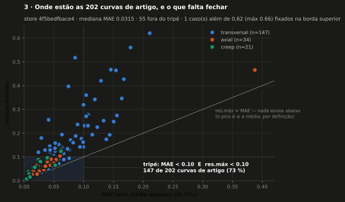
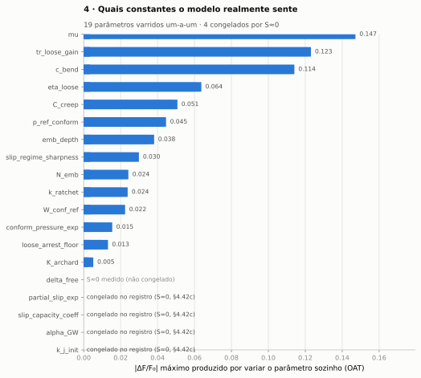
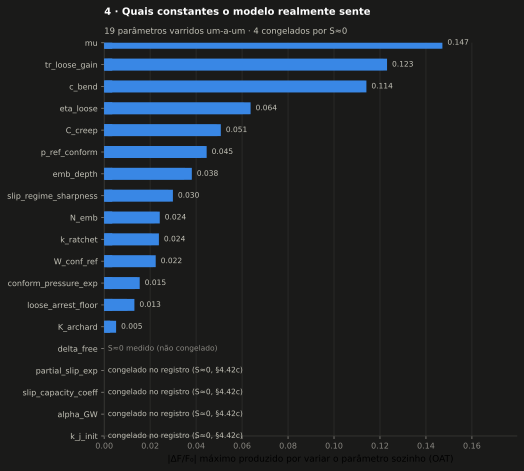
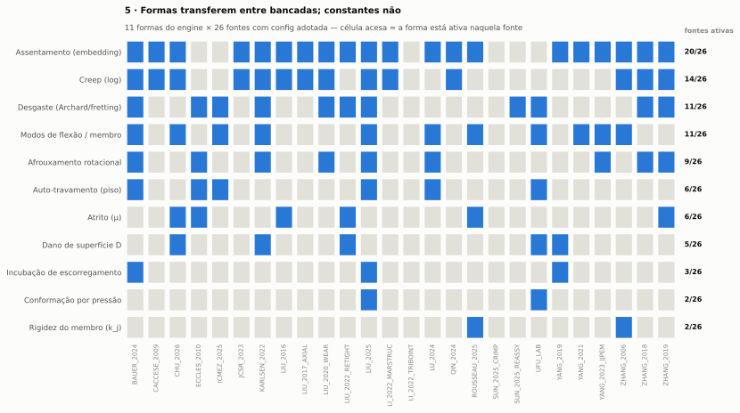
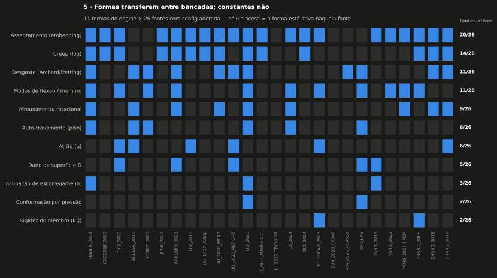

Manual do BAS V2BAS V2 Manual
docs/MANUAL_BAS_V2/.The Manual is the project's
through-line: three volumes (pt-BR) that stitch together what already exists
(equations, legitimacy, methodology, gallery) instead of duplicating it. Files live under
docs/MANUAL_BAS_V2/.Os três volumesThe three volumes
- Volume 1 — Entender o modeloUnderstand the model – o paradigma MSD com estado lento, a energia como invariante, a tese formas transferem / constantes não, a tabela de TODAS as constantes com procedência, as limitações L1–L7 e o histórico de falsificações.the MSD paradigm with slow state, energy as an invariant, the shapes transfer / constants don't thesis, the table of ALL constants with provenance, limitations L1–L7 and the falsification record.
- Volume 2 — Explicar o modeloExplain the model – material para terceiros: narrativa em 3 níveis (parágrafo → 10 minutos → seminário), as 5 figuras com o que cada uma prova, e um FAQ de objeções em que cada resposta traz evidência citável.material for third parties: a 3-level narrative (paragraph → 10 minutes → seminar), the 5 figures with what each proves, and an objections FAQ where every answer carries citable evidence.
- Volume 3 — Aplicar o softwareApply the software – instalar e rodar, o fluxo tela por tela, analisar uma junta nova (de onde vem cada input), acrescentar um artigo fim-a-fim, reprodutibilidade e as armadilhas reais.install and run, the flow screen by screen, analysing a new joint (where each input comes from), adding a paper end-to-end, reproducibility and the real gotchas.
O estado do modelo, do store real Model state, from the real store
Fingerprint 4f5bedfbace4. Todo número do
Manual sai daqui — o gate da F6 proíbe número solto.
Fingerprint 4f5bedfbace4. Every number in the Manual comes from
here — the F6 gate forbids loose numbers.
- 147 / 202 curvas de artigo no tripé
(
MAE<0,10Eres.máx<0,10) = 73 %, de 28 fontes.paper curves inside the tripod (MAE<0.10ANDmaxerr<0.10) = 73 %, from 28 sources. - medianamedian 0,0315 · médiamean 0,0445 · mediana do res.máxmedian maxerr 0,0623
- o gargalo é o PICOthe bottleneck is the PEAK – das 55 curvas fora, 34 violam só o res.máx e 0 violam só o MAE. Esforço medido em MAE médio não move a meta.of the 55 outside, 34 violate only maxerr and 0 violate only MAE. Effort measured in mean MAE does not move the goal.
- 3 constantes fitadas no dataset inteiro
constants fitted over the whole dataset
(
W_conf_ref,C_creep,F0_test)
As cinco figurasThe five figures
Geradas por scripts/manual_figs.py a partir do
store; o gate --check re-renderiza num temporário e exige os 11 artefatos
byte-idênticos. Cada figura carrega variaveis,
como_ler e, onde couber, ressalva no
numbers.json.Generated by
scripts/manual_figs.py from the store; the --check gate re-renders into a
temp dir and requires all 11 artefacts byte-identical. Each figure carries
variaveis, como_ler and, where relevant, ressalva in
numbers.json.










RegenerarRegenerate
py -3.12 New_Theory/parallel_batch.py --workers 6 --store
py -3.12 -m bolt_analysis_studio.validation.report
py -3.12 New_Theory/build_variable_explorer.py
py -3.12 scripts/manual_figs.py
py -3.12 scripts/manual_figs.py --check